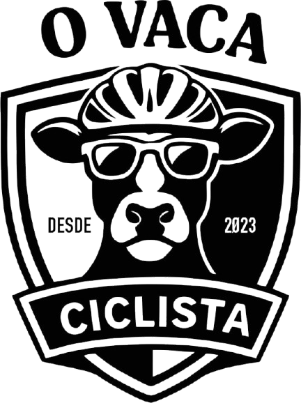

404 — fora do percurso
Essa página furou o pneu ou nunca largou. Confere o endereço ou volta pro pelotão pela home.
Enquanto isso, veja as notícias →
Essa página furou o pneu ou nunca largou. Confere o endereço ou volta pro pelotão pela home.
Enquanto isso, veja as notícias →